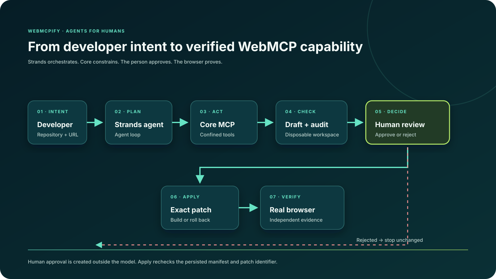

W
WebMCPify Core AgentIMPROVISUS
Agents for Humans · Professional Agent
Turn web apps into reviewed WebMCP capabilities.
Strands plans the work. Core constrains the change. A person keeps control.
The problem
Agents can read pages.
Acting reliably is harder.
Developers still have to discover real actions, design schemas, secure sensitive operations, implement tools, and prove the result.
The workflow
Repetitive work, handled end to end.
01Discover
Routes, forms, APIs, auth signals, existing tools.
02Draft + audit
Grounded changes in a disposable repository copy.
03Apply + prove
Only after approval, then build and browser evidence.
Working implementation
Strands orchestrates Core through MCP.
$ pnpm agent -- --help
WebMCPify Core Agent — Strands-powered WebMCP preparation
tools: analyze · generate · audit · review · status · apply · test
$ pnpm agent:test
✓ 4 focused Strands workflow tests passed
$ pnpm test:mcp
✓ MCP end-to-end verification passed
The boundary that matters
The agent cannot approve itself.
Strands agent
Plans, proposes, audits, and explains.
→
Trusted local review
A person sees the exact tools, tests, findings, and diff.
Changed drafts invalidate approval. Failed builds roll back. Browser checks verify observable state.
Architecture
Small agent surface.
Strong control plane.

Open source · MIT
Make the web actionable.
Keep people in charge.
github.com/improvisus-webmcp/
webmcpify-core
webmcpify-core